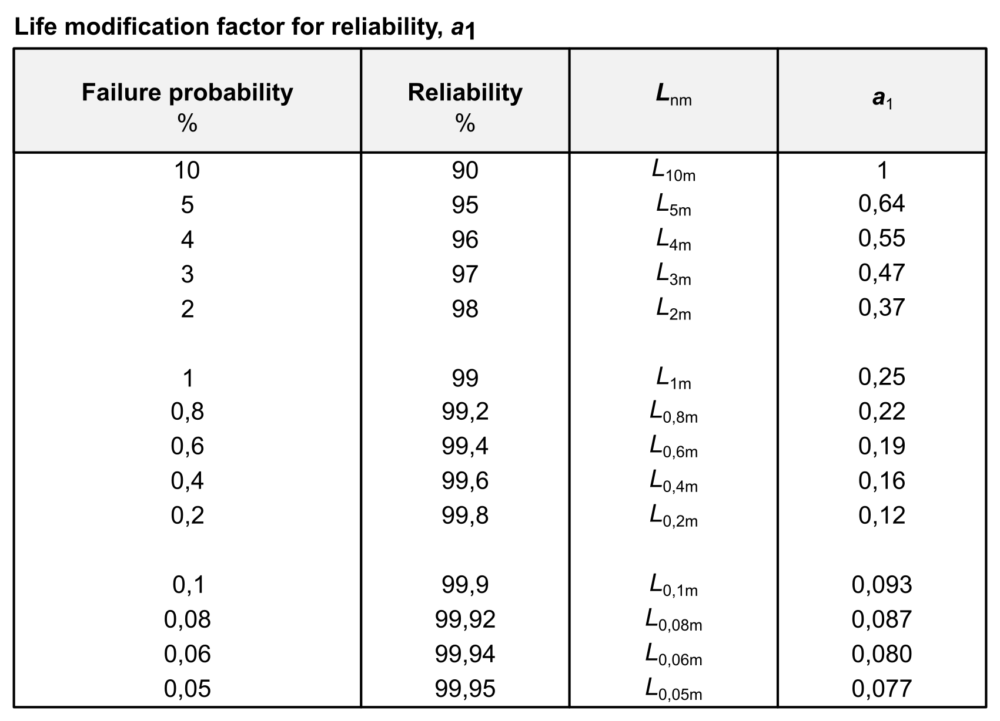

|
|
|


失效概率
通常，失效概率假设为 10%。这意味着轴承有 90% 的概率在等于额定动载荷 C 的载荷下能够承受 100 万转。此时可靠性的寿命修正系数 a1 = 1。如果失效概率必须更低，则系数 a1 也必须更低。不同失效概率对应的系数如下表所示（见图 27.3）（改编自 ISO 281:2007）。
要定义失效概率，请选择 。

图 27.3：可靠性的寿命修正系数
Failure probability
Normally, the failure probability is assumed to be 10%. This means that there is a 90% probability that the bearing will survive 1 million revolutions under the load equal to the dynamic capacity C. In this case, the life modification factor for reliability is a1 = 1. If the failure probability must be lower, factor a1 must also be lower. The factors for different failure probabilities are given in the table shown below (see Figure 27.3) (adapted from ISO 281:2007).
To define the failure probability, select .
Figure 27.3: Life modification factor for reliability